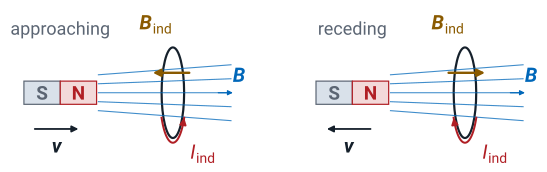
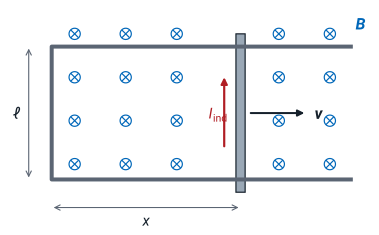
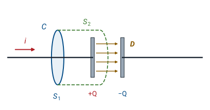
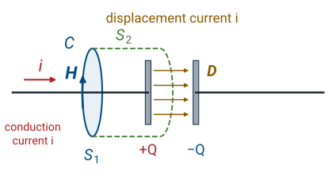
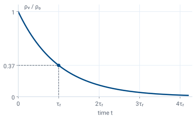

L33 - Faraday’s Law and Displacement Current#
Faraday's Law and Displacement Current
Today we let the fields change in time.
Lesson 33 · Module 4: Dynamic Fields · Maj Ellis · Dr. Neil Rogers
Learning Objectives
- I can articulate the significance of the displacement current and calculate it, given a time-varying electric field.
- I can articulate the meaning of and calculate the relaxation time for a variety of materials.
Modules 2 and 3 held every charge and current steady. Today we let the fields change in time, which changes two of the laws we have. Faraday’s law says a magnetic flux that changes through a loop drives a voltage around it, so the electric field is no longer conservative. The displacement current adds a term to Ampere’s law, so that a changing electric field produces a magnetic field the same way a current does. The same argument that finds the displacement current also gives the relaxation time, the time a material takes to move free charge out of its interior. Lesson 34 collects the results into Maxwell’s equations.
Where We Were
Law |
Static form |
Lesson |
|---|---|---|
Circulation of \(\mathbf{E}\) |
\(\nabla\times\mathbf{E} = 0\) |
22 |
Ampere’s law |
\(\nabla\times\mathbf{H} = \mathbf{J}\) |
29 |
Charge continuity |
\(\nabla\cdot\mathbf{J} = 0\) |
27 |
Three results from the static modules are about to change. Lesson 22 showed that a static electric field does no net work around a closed path, so its circulation and its curl are zero; that is why a potential \(V\) described it completely. Lesson 29 derived Ampere’s law for steady currents, and Lesson 27 showed that a steady current leaves no charge behind, so the net current out of every closed surface is zero. Each of these assumed that nothing changes with time. Today we drop that assumption, one law at a time, starting with the electric field around a loop.
Lenz’s Law

A changing flux through a loop drives a current in it.
The induced current’s field opposes the change in flux.
Michael Faraday found by experiment that a magnet moving near a closed wire loop drives a current around the loop, and that the current stops when the magnet stops. The current depends on the motion, not on the magnet’s position. Lenz’s law gives its direction: the induced current flows the way that makes its own magnetic field oppose the change in flux through the loop. As the north pole approaches, the flux through the ring to the right grows, and the induced field \(\mathbf{B}_\text{ind}\) points left, against the growth. As the magnet recedes, the flux shrinks, and the induced field points right, to hold the flux up. The induced current reverses between the two panels. The same opposition explains the diamagnetism of Lesson 31: an applied field induces atomic currents whose fields oppose it.
Faraday’s Law
\(S\) is a surface with edge \(C\), its normal set by the right-hand rule.
\(N\) turns multiply the flux, and the EMF, by \(N\).
Faraday’s law puts Lenz’s law into an equation. The left side is the electromotive force, or EMF: the work per unit charge the electric field does on a charge carried once around the closed path \(C\), in volts. The right side is the rate of change of the magnetic flux \(\Phi\) through a surface \(S\) bounded by \(C\), the same flux Lesson 30 used for inductance. We use the right-hand rule of Lesson 29: curl the fingers along \(C\), and the thumb gives the normal of \(S\). The minus sign is Lenz’s law. If the flux along the normal grows, the EMF is negative, so the current it drives circulates against the direction of \(C\), and its field points against the normal. Faraday’s law is an experimental law, like Coulomb’s law in Lesson 18: we do not derive it from the static laws, because the static laws say nothing about fields that change. A coil of \(N\) turns is \(N\) loops in series, each linking the same flux, so its EMF is \(N\) times one loop’s.
Faraday’s law changes the result of Lesson 22. A static electric field has \(\oint \mathbf{E}\cdot d\mathbf{l} = 0\), but a field driven by a changing flux does net work around a closed path. The EMF is not a potential difference, because a potential would give zero around any closed path.
Explore: A Loop Crossing a Field
The widget moves a loop 20 cm wide and 10 cm tall to the right at speed \(v\) through a region 30 cm wide that holds a uniform \(\mathbf{B}\) out of the page. We take the path \(C\) counterclockwise, so its normal points out of the page, along \(\mathbf{B}\). The upper plot is the flux through the loop against the position of its front edge, and the lower plot is the EMF, \(-d\Phi/dt\). While the loop enters, the flux grows at the steady rate \(B\ell v\), where \(\ell = 10\) cm is the side that crosses the field’s edge, and the EMF is \(-B\ell v = -100\) mV at the default settings: the current runs clockwise, and its field inside the loop points into the page, against the growing flux. Once the loop is entirely inside, the flux is constant at its largest value and the EMF is zero. As the loop leaves, the flux falls and the current reverses. Double the speed, and the EMF doubles while the flux curve keeps its shape: the EMF depends on how fast the flux changes, not on how large it is.
A Loop in a Changing Field
\(\mathbf{B} = \hat{\mathbf{z}}\ B_0\cos\omega t\) through a loop of area \(A\) in the \(xy\) plane:
A 5 cm loop in 1 mT at 60 Hz gives \(2.96\) mV per turn, and 100 turns give \(0.296\) V.
The simplest case holds the loop still and lets the field change. A uniform field along \(\hat{\mathbf{z}}\) that oscillates at angular frequency \(\omega\) passes through a flat loop of area \(A\) in the \(xy\) plane. We traverse the loop counterclockwise as seen from \(+z\), so its normal is \(\hat{\mathbf{z}}\) and the flux is \(B_0 A\cos\omega t\). Differentiating gives the EMF, whose amplitude \(\omega B_0 A\) grows with frequency, with field strength, and with area. For a loop of radius 5 cm, the area is \(\pi \times 0.05^2 = 7.85 \times 10^{-3}\ \text{m}^2\), and a 1 mT field at 60 Hz, with \(\omega = 377\) rad/s, gives \(377 \times 10^{-3} \times 7.85 \times 10^{-3} = 2.96\) mV. A coil of 100 turns gives 0.296 V. The EMF is largest as the field passes through zero, because the field changes fastest there. This is how a transformer’s secondary winding produces its voltage, which Lesson 34 takes up.
A Moving Bar

The flux can also change because the loop moves. A conducting bar slides at speed \(v\) along two rails a distance \(\ell\) apart, closed at the left end, in a uniform field \(\mathbf{B} = -\hat{\mathbf{z}}\ B\) into the page. Each charge in the bar moves with it, and Lesson 28’s magnetic force on a moving charge gives
up the bar. Only the bar moves, so only the bar contributes, and the integral of the force per unit charge around the loop, counterclockwise, is \(vB\ell\). That is the EMF, and it drives the current counterclockwise, up the bar.
The rate of change of flux gives the same EMF. Counterclockwise travel makes the normal \(+\hat{\mathbf{z}}\), against \(\mathbf{B}\), so the flux is \(\Phi = -B\ell x\), and \(-d\Phi/dt = B\ell\ dx/dt = vB\ell\). The current flows counterclockwise, so its own field inside the loop points out of the page and opposes the growing flux into it, as Lenz’s law requires. For a bar 0.5 m long moving at 2 m/s in 0.2 T, the EMF is \(0.2 \times 0.5 \times 2 = 0.2\) V.
The Point Form of Faraday’s Law
For a path and surface that do not move:
We find the point form the way Lesson 29 did for Ampere’s law. Stokes’ theorem from Lesson 17 turns the circulation of \(\mathbf{E}\) around \(C\) into the flux of \(\nabla\times\mathbf{E}\) through \(S\). When the path and the surface stay still, the time derivative of the flux acts only on \(\mathbf{B}\), so it moves inside the integral as a partial derivative. The two surface integrals are equal for every surface, however small, so the integrands are equal at every point. The result is the point form of Faraday’s law: wherever \(\mathbf{B}\) changes with time, the electric field has a curl. When nothing changes, the right side is zero and we recover Lesson 22’s \(\nabla\times\mathbf{E} = 0\). The moving bar is not covered by this form, because its path moves; its EMF comes from the magnetic force, as in the previous frame.
The Telegrapher’s L′ Term

Lesson 30 defined inductance as flux per amp, \(\Phi = Li\), and Faraday’s law turns that flux into a voltage. For a lumped inductor, a changing current changes \(\Phi\), and the EMF it induces appears across the terminals as \(v = L\ di/dt\), the circuit law; for a coil of \(N\) turns, \(\Phi\) counts the flux linked by all the turns. A strip of coaxial line is the same statement per unit length, with the inductance per meter \(L'\) of Lesson 30. We take the strip of the figure, of length \(\Delta z\), and its edge \(C\): out along the inner conductor from \(z\) to \(z+\Delta z\), across to the shield, back along the shield, and across to the inner conductor. With this direction the right-hand rule makes the strip’s normal \(\hat{\boldsymbol{\phi}}\), the direction of \(\mathbf{B}\), so the flux is \(L'\Delta z\ i\). The two sides along perfect conductors contribute nothing, because the tangential electric field at a conductor is zero (Lesson 24). The side from the inner conductor to the shield at \(z+\Delta z\) contributes the voltage \(v(z+\Delta z)\) between them, and the return side at \(z\) contributes \(-v(z)\). Dividing by \(\Delta z\) and taking the limit gives the first telegrapher’s equation of Lesson 3, without its \(R'\) term. Conductors with resistance add an electric field along the two long sides, and their contribution is the \(R'\Delta z\ i\) that Lesson 3 put in series with \(L'\).
Charge Continuity
Now we turn to Ampere’s law, starting from the conservation of charge. Lesson 27 said the current out of a closed surface equals the rate at which the charge inside decreases, and then set that rate to zero for steady currents. Here we keep it. The divergence theorem of Lesson 17 turns the surface integral on the left into a volume integral of \(\nabla\cdot\mathbf{J}\), and with the volume held fixed, the time derivative moves inside the integral on the right. The equality holds for every volume, so the integrands are equal. This continuity equation says that wherever current converges, charge accumulates, and wherever it diverges, the charge decreases.
Ampere’s Law and a Charging Capacitor

The static Ampere’s law cannot hold while charge accumulates. Lesson 29 showed that the divergence of any curl is zero, so taking the divergence of \(\nabla\times\mathbf{H} = \mathbf{J}\) would require \(\nabla\cdot\mathbf{J} = 0\), and the continuity equation says that is false wherever \(\rho_v\) changes.
The capacitor shows the failure with two surfaces. A current \(i\) charges the plates, and the path \(C\) circles the wire. Ampere’s law says the circulation of \(\mathbf{H}\) around \(C\) equals the current through any surface bounded by \(C\). The wire crosses the flat surface \(S_1\), which gives \(i\). The bag \(S_2\) has the same edge, but it passes between the plates, where no charge crosses it, and gives zero. The circulation around \(C\) cannot equal both. In Lesson 29, the two-surface argument worked because a steady current leaves no charge inside the volume between the surfaces; here the charge on the plate inside that volume grows.
The Displacement Current

Gauss’s law supplies the missing term. Lesson 21 gave \(\rho_v = \nabla\cdot\mathbf{D}\), so the continuity equation becomes a statement that the sum of \(\mathbf{J}\) and \(\partial\mathbf{D}/\partial t\) has zero divergence, with the time derivative and the divergence taken in either order. That sum can be the curl of \(\mathbf{H}\) without contradiction. James Clerk Maxwell added the term and called \(\partial\mathbf{D}/\partial t\) the displacement current density, in A/m², and the curl equation with it is the Ampere–Maxwell law. The divergence argument shows that continuity requires the term, and Lesson 35 shows that, with it, the equations predict a wave that travels at the speed of light, which experiments confirm. In integral form, through Stokes’ theorem,
for a surface that does not move. For the capacitor, the plates carry charge \(Q\) on area \(A\), and Lesson 25 gave \(D = \rho_s = Q/A\) between them, so the displacement current through \(S_2\) is \(A\ d(Q/A)/dt = dQ/dt = i\). Both surfaces now give the same circulation, as the figure shows: the conduction current crosses \(S_1\), and the same current, as displacement current, crosses \(S_2\).
Worked Example: Displacement Current in a Capacitor
Air gap, \(A = 10\ \text{cm}^2\), \(d = 1\) mm, \(v = 10\sin(2\pi \times 10^6\ t)\) V:
The wire carries the same current, \(C\ dv/dt\), with \(C = 8.85\) pF.
Worked example — the displacement current between the plates
A parallel-plate capacitor has plates of area \(A = 10\ \text{cm}^2 = 10^{-3}\ \text{m}^2\) separated by \(d = 1\) mm of air, and a 1 MHz source applies \(v = 10\sin\omega t\) V. Ignoring fringing, the field between the plates is uniform, \(E = v/d\), with amplitude \(E_0 = 10/10^{-3} = 10^4\) V/m. The displacement current density is
The displacement current density is \(0.556\cos\omega t\) A/m², and over the plate area the displacement current is \(0.556\) mA in amplitude. The capacitance from Lesson 25 is \(C = \epsilon_0 A/d = 8.85\) pF, and the current in the wire is \(C\ dv/dt = \omega C V_0\cos\omega t\), with amplitude \(2\pi \times 10^6 \times 8.85 \times 10^{-12} \times 10 = 0.556\) mA. The current in the wire continues across the gap as displacement current, with the same value.
Conduction or Displacement Current?
For \(E = E_0\cos\omega t\) in a material with \(\sigma\) and \(\epsilon\), the amplitudes compare as \(\sigma/(\omega\epsilon)\):
Material |
Frequency |
\(\sigma/(\omega\epsilon)\) |
|---|---|---|
Copper |
100 MHz |
\(1.0\times10^{10}\) |
Seawater |
1 MHz |
\(8.9\times10^{2}\) |
Seawater |
1 GHz |
\(0.89\) |
RG-58 polyethylene |
100 MHz |
\(2\times10^{-4}\) |
In a material with conductivity \(\sigma\), a sinusoidal field drives two currents. The conduction current density is \(\sigma E_0\cos\omega t\), from Lesson 27, and the displacement current density is \(\epsilon\ \partial E/\partial t = -\omega\epsilon E_0\sin\omega t\). Their amplitudes compare as \(\sigma/(\omega\epsilon)\), the ratio Lesson 27 used to give its conductor and insulator thresholds a meaning. In copper at 100 MHz, conduction exceeds displacement by ten orders of magnitude, so copper is a good conductor at every frequency this course uses. Seawater, with \(\sigma = 4\) S/m and \(\epsilon_r = 81\), is a good conductor at 1 MHz and nearer an equal mix at 1 GHz; the two currents are equal at \(f = \sigma/(2\pi\epsilon) = 0.89\) GHz. The polyethylene in RG-58 has the effective conductivity \(\omega\epsilon\tan\delta\) that Lesson 27 derived from its loss, so its ratio is the loss tangent of Lesson 5, \(2 \times 10^{-4}\): the polyethylene is a good insulator, and almost all of its current is displacement current.
Relaxation Time

The continuity equation also says what happens to free charge placed inside a material. In a uniform material, \(\sigma\) and \(\epsilon\) are constants, Ohm’s law from Lesson 27 gives \(\mathbf{J} = \sigma\mathbf{E}\), and \(\mathbf{D} = \epsilon\mathbf{E}\), so the divergence of \(\mathbf{J}\) is \(\sigma/\epsilon\) times the divergence of \(\mathbf{D}\), which Gauss’s law makes \(\rho_v\). The continuity equation then says that the charge density at each point decreases at a rate proportional to itself. The solution is an exponential decay with time constant \(\tau_r = \epsilon/\sigma\), the relaxation time: after one \(\tau_r\), 37% of the charge remains, and after \(4\tau_r\), 2%. The subscript keeps it apart from the transmission coefficient \(\tau\) of Lessons 6 and 38. The charge does not vanish; the current carries it to the material’s surface, where it stays. This is why Lesson 24 could put the free charge of a conductor on its surface. The ratio of the previous frame is \(\sigma/(\omega\epsilon) = 1/(\omega\tau_r)\), so a material behaves as a good conductor at frequencies whose period is much longer than its relaxation time.
Relaxation Times of Real Materials
Material |
\(\sigma\) (S/m) |
\(\epsilon_r\) |
\(\tau_r = \epsilon/\sigma\) |
|---|---|---|---|
Copper |
\(5.8\times10^{7}\) |
1 |
\(1.5\times10^{-19}\) s |
Seawater |
\(4\) |
81 |
\(1.8\times10^{-10}\) s |
Distilled water |
\(6\times10^{-6}\) |
80 |
\(1.2\times10^{-4}\) s |
Polystyrene |
\(10^{-17}\) |
2.56 |
\(2.3\times10^{6}\) s |
The relaxation time spans 25 orders of magnitude across ordinary materials. For copper, \(\tau_r = 8.854\times10^{-12}/(5.8\times10^{7}) = 1.5\times10^{-19}\) s. That number comes from Ohm’s law, and Ohm’s law is an average over many collisions: Lesson 27 found that an electron in copper collides every \(2.4\times10^{-14}\) s, so Ohm’s law cannot describe a change faster than one collision. The true time for copper to move its charge to the surface is therefore of the order of the collision time. Either way the charge reaches the surface far faster than the period of any signal in this course. Seawater relaxes in 0.18 ns, and \(1/(2\pi\tau_r) = 0.89\) GHz is the crossover of the previous frame. A charge placed inside polystyrene, with \(\tau_r = 2.56 \times 8.854\times10^{-12}/10^{-17} = 2.3\times10^{6}\) s, stays in place for about 26 days, which is why a charged insulator holds its charge.
Summary
Symbol / idea |
What it is |
Result |
|---|---|---|
Lenz’s law |
The induced current opposes the change in flux |
sets the sign |
Faraday’s law |
EMF around \(C\) is minus the rate of change of flux |
\(\oint_C \mathbf{E}\cdot d\mathbf{l} = -d\Phi/dt\) |
Point form |
Path and surface fixed |
\(\nabla\times\mathbf{E} = -\partial\mathbf{B}/\partial t\) |
Moving bar |
Force \(q\mathbf{v}\times\mathbf{B}\) on the charges |
EMF \(= vB\ell\) |
Telegrapher’s \(L'\) |
Faraday’s law on a strip of coax |
\(-\partial v/\partial z = L'\ \partial i/\partial t\) |
Continuity |
Conservation of charge |
\(\nabla\cdot\mathbf{J} = -\partial\rho_v/\partial t\) |
Ampere–Maxwell law |
Displacement current, required by continuity and Gauss’s law |
\(\nabla\times\mathbf{H} = \mathbf{J} + \partial\mathbf{D}/\partial t\) |
Conduction vs. displacement |
Ratio of amplitudes |
\(\sigma/(\omega\epsilon)\) |
Relaxation time |
Free charge decays to the surface |
\(\tau_r = \epsilon/\sigma\) |
Practice
Where This Is Going
Lesson 34: the four laws with today’s two changes are Maxwell’s equations.
Lesson 35: in a region with no charge or current, they combine into a wave equation.
Today Faraday’s law gave the electric field a curl wherever the magnetic field changes, and the displacement current gave the magnetic field a curl wherever the electric field changes. Lesson 34 collects Gauss’s law, Gauss’s law for magnetism, Faraday’s law, and Ampere’s law with the displacement current, the Ampere–Maxwell law, into Maxwell’s equations, works examples with them, and explains the transformer. With each changing field producing the other, Lesson 35 shows that the two can sustain each other far from any source, as a wave.
Before Lesson 34, read sections 8.3, 8.8, and 8.9 of Ellingson, Electromagnetics, Vol. 1.